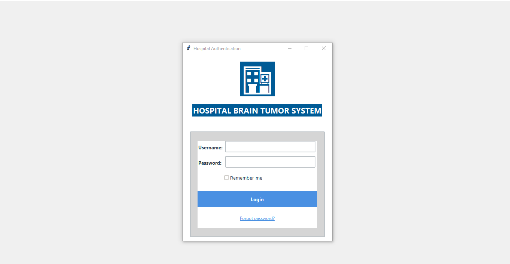

AI-powered brain tumor detection and analysis system for medical professionals
The Hospital Brain Tumor Detection System (HBTDS) is an advanced medical application designed to assist healthcare professionals in detecting brain tumors from MRI scans using machine learning algorithms. Version 1.5.1 introduces improved model accuracy, enhanced reporting features, and a more intuitive user interface.
| Component | Minimum Requirements | Recommended |
|---|---|---|
| Operating System | Windows 10, macOS 10.15+, Linux (Ubuntu 18.04+) | Windows 11, macOS 12+, Ubuntu 20.04+ |
| Processor | Intel Core i5 or equivalent | Intel Core i7 or equivalent |
| Memory | 8GB RAM | 16GB RAM or more |
| Storage | 500MB available space | 1GB available space |
| Display | 1366x768 resolution | 1920x1080 or higher |
| Additional | Python 3.8+ (included in installer) | |
HBTDS_Setup_1.5.1.exe installer from the hospital networkC:\Program Files\HBTDS)HBTDS_1.5.1.dmg fileUpon launching the application, you will see the login screen:
The typical workflow for tumor detection is:
The system supports four distinct user roles with different permissions:
| Role | Permissions | Typical Users |
|---|---|---|
| Administrator | Full system access including user management and system settings | IT Staff, System Administrators |
| Doctor | View reports, generate PDF reports, add clinical notes | Neurologists, Oncologists |
| Radiologist | Upload scans, run predictions, annotate images, view/generate reports | Radiology Department |
| Technician | Upload scans, run predictions | MRI Technicians, Lab Staff |
The dashboard provides an overview of system status and quick access to key functions:
The core functionality of the system includes:
Compare the performance of different machine learning models:
Generate comprehensive PDF reports containing:
Reports are automatically saved in the patient's folder within the system.
| Issue | Solution |
|---|---|
| Application fails to start | Ensure your system meets minimum requirements. Try reinstalling the application. |
| Models not loading | Check internet connection for initial model download. Verify sufficient disk space. |
| Image upload fails | Verify image format (PNG, JPG, BMP, TIF). Try a different image. |
| Slow performance | Close other applications. Reduce image size before uploading. |
| PDF generation error | Ensure you have write permissions in the target directory. |
A: Yes, after initial installation and model download, the system works offline.
A: The system supports PNG, JPEG, BMP, and TIFF formats.
A: Accuracy varies by model (85-92% in testing). Always verify results with a radiologist.
A: Not in this version. Report customization is planned for v2.0.
A: Updates are distributed through the hospital IT department. You will be notified when updates are available.
For technical support or questions about the Hospital Brain Tumor Detection System:
IT Support Team:
Email: akrashnoor2580@gmail.com
Phone: (+92) 311-545-9380
Hours: Mon-Fri, 8AM-5PM
Emergency Support (24/7):
Phone: (+92) 311-545-9380
When contacting support, please have ready: